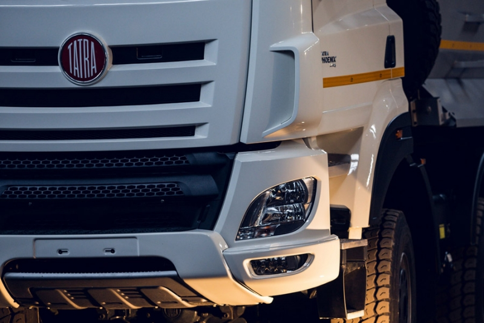
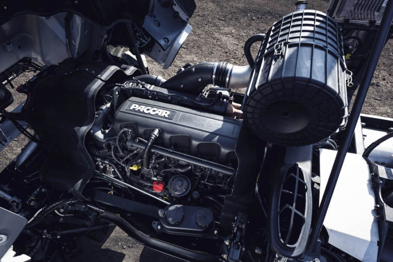

A empresa TATRA TRUCKS a.s. apresenta novidades técnicas, de engenharia e de negócios na forma de caminhões pesados da linha de modelos TATRA PHOENIX com motores que atendem às mais rigorosas especificações de emissões Euro 6 Euro 6 enriquecem a oferta do único fabricante de caminhões tcheco exatamente de acordo com a DAF TRUCKS N.V., a parte europeia da empresa automotiva americana PACCAR

-A TATRA há muito apoia corridas e competições automotivas.
-A TATRA participa do Rally Dakar há mais de 30 anos.
-Os veículos TATRA venceram o Rally Dakar seis vezes.
-A marca TATRA já subiu ao pódio do Dakar dezoito vezes.
-TATRA suporta quatro equipes privadas.

-Superestruturas personalizadas
A TATRA tem uma solução sob medida pronta para o seu negócio.
-Lida com o terreno mais exigente
Um veículo com tração integral com engate opcional da tração dianteira.
-Suspensão King Frame
Suspensão combinada composta por feiche de molas e helicoidais e molas de fole a ar de alta pressão.
-Chassis TATRA exclusivo
Todos os veículos se beneficiam das suas excelentes características

-Superestruturas personalizadas
TATRA tem uma solução sob medida pronta para bombeiros
-Aplicabilidade prática
Todos os espaços de armazenamento são acessíveis a partir do solo, sem necessidade de plataformas de embarque.
-Baixa manutenção
Os componentes do trem de força são protegidos contra ambientes agressivos.

-Superestruturas sob medida
Um grande reboque ou sistemas de superestruturas intercambiáveis atenderão às suas expectativas
-Transporte eficiente
Com o trator agrícola TATRA, o transporte de cargas do campo é muito mais eficiente do que com um trator clássico
-Pensamento e mobilidade
Graças ao chassi TATRA e à transmissão automática Allison, ele lida com os terrenos mais difíceis. Os pneus de flutuação com sistema de enchimento central atenuam as pressões específicas em terrenos agrícolas.

-Soluções personalizadas
O TATRA está em conformidade com todos os padrões da OTAN, bem como com os requisitos especiais dos usuários.
-Número máximo de variantes de unidade
Padronização das configurações de drive 4x4, 6x6, 8x8, 10x10 e 12x12. Variabilidade do trem de força.
-Transportável por via aérea
Dependendo da configuração, alguns chassis de veículos TATRA podem ser transportados por aeronaves C-130 Hercules.

- Superestruturas personalizadas
A TATRA tem uma solução sob medida pronta para o seu negócio. Podemos cumprir os requisitos mais exigentes.
-Número máximo de variantes de unidade
Disponível em configurações de drive 4x4, 6x6, 8x8, 10x10, 12x12, bem como 10x8.
-Chassis TATRA exclusivo
Todos os veículos se beneficiam das excelentes características de direção do chassi do veículo conceito TATRA.